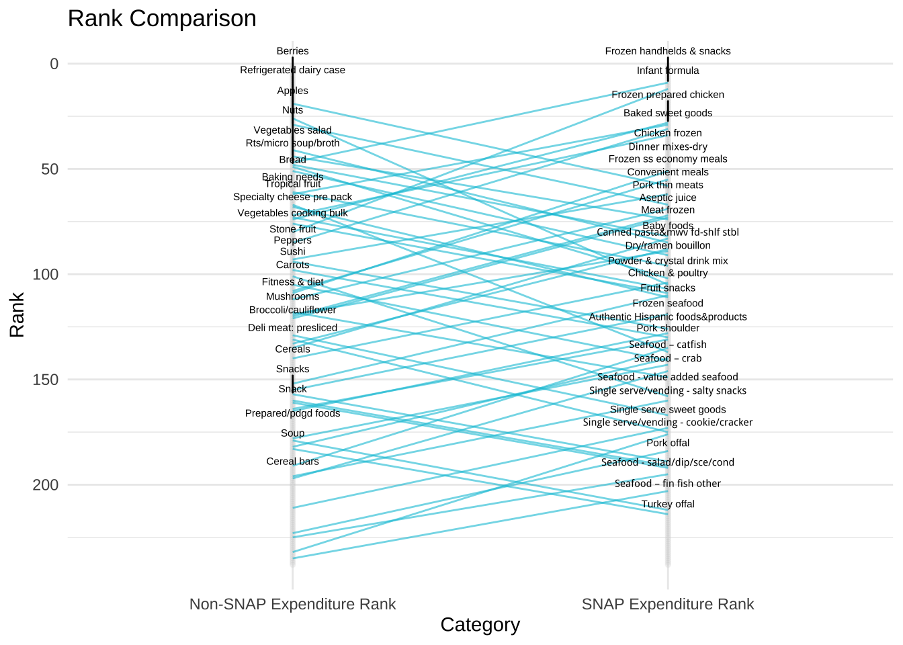

library(tidyverse)
library(tabulizer)Transforming PDFs into useful tables
Most of the time, data doesn't come in tidy spreadsheets. With R, though, you can pull data from PDFs to use in analyses.
import
tidy
visualize
Way back in 2016, the USDA released a study entitled “Foods Typically Purchased by Supplemental Nutrition Assistance Program (SNAP) Households” that included a summary, final report, and appendices. Per the USDA’s description:
“This study uses calendar year 2011 point-of-sale transaction data from a leading grocery retailer to examine the food choices of SNAP and non-SNAP households.”
At the time though, I was most interested in looking at the appendices data - 263 pages full of tables detailing the commodities and categories of food bought by both families served and not served by SNAP. Unfortunately, these wonderful data are in PDF format, with ‘fancy’ Excel formatting (merged cells, unnecessary column names), where the formatting varies depending on which appendix you are looking at.
I emailed SNAP HQ to ask if they had the raw data available in CSVs and was told simply:
“Thank you for your inquiry. Unfortunately we do not have the data tables in a CSV file.”
At the time, my R skills were pretty rudimentary and I couldn’t figure out how to easily and efficiently pull the data into usable tables. Two years later and with a little more experience with R and scraping and cleaning ugly files, I decided to try again using the {tidyverse} and {tabulizer} packages.
We use tabulizer::extract_tables() to extract the data from the appendices PDF. Once we extract the tables, we are left with a list (which is slightly more manageable than the original PDFs).
snap_pdf <-
extract_tables(
"https://fns-prod.azureedge.net/sites/default/files/ops/SNAPFoodsTypicallyPurchased-Appendices.pdf"
)Using the {purrr} package, we create a data frame from the lists while simultaneously removing the unnecessary rows.
snap_df <-
snap_pdf %>%
map(as_tibble) %>%
map_df( ~ slice(.,-2)) # slicing because of the unnecessary rows
head(snap_df)# A tibble: 6 × 9
V1 V2 V3 V4 V5 V6 V7 V8 V9
<chr> <chr> <chr> <chr> <chr> <chr> <chr> <chr> <chr>
1 "" "" SNAP Househol… <NA> <NA> <NA> <NA> <NA> <NA>
2 "Soft drinks" "" 1 $357.7 5.44… <NA> <NA> <NA> <NA> <NA> <NA>
3 "Fluid milk products" "" 2 $253.7 3.85… <NA> <NA> <NA> <NA> <NA> <NA>
4 "Beef:grinds" "" 3 $201.0 3.05… <NA> <NA> <NA> <NA> <NA> <NA>
5 "Bag snacks" "" 4 $199.3 3.03… <NA> <NA> <NA> <NA> <NA> <NA>
6 "Cheese" "" 5 $186.4 2.83… <NA> <NA> <NA> <NA> <NA> <NA> Due to the original formatting of the PDFs, we need to do a lot of cleaning to make the list into a usable table. Using slice(), we isolate only the rows from Appendix 1.
snap_appendix1 <-
snap_df %>%
slice(1:244)Now comes the fun part (yay, data cleaning!). When we look at the data frame, the data for each commodity are in two separate columns (V2 and V3), but only one column or the other. There are several empty columns (V4 through V9), probably created due to the funky original formatting.
First things first: let’s put all the data in a single column called col_dat. Then, we will remove all the empty rows in the newly created col_dat column.
snap_appendix1_pt1 <-
snap_appendix1 %>%
mutate(col_dat = case_when(grepl("[0-9]", V2) ~ V2, # create a column that contains all the data
grepl("[0-9]", V3) ~ V3,
TRUE ~ "")) %>%
filter(col_dat != "") # some rows are empty
head(snap_appendix1_pt1)# A tibble: 6 × 10
V1 V2 V3 V4 V5 V6 V7 V8 V9 col_dat
<chr> <chr> <chr> <chr> <chr> <chr> <chr> <chr> <chr> <chr>
1 Soft drinks "" 1 $357.… <NA> <NA> <NA> <NA> <NA> <NA> 1 $357…
2 Fluid milk products "" 2 $253.… <NA> <NA> <NA> <NA> <NA> <NA> 2 $253…
3 Beef:grinds "" 3 $201.… <NA> <NA> <NA> <NA> <NA> <NA> 3 $201…
4 Bag snacks "" 4 $199.… <NA> <NA> <NA> <NA> <NA> <NA> 4 $199…
5 Cheese "" 5 $186.… <NA> <NA> <NA> <NA> <NA> <NA> 5 $186…
6 Baked breads "" 6 $163.… <NA> <NA> <NA> <NA> <NA> <NA> 6 $163…Now the numeric data we want is in a single column, we can select the columns V1 and col_dat.
snap_appendix1_pt2 <-
snap_appendix1_pt1 %>%
select(V1, col_dat)
head(snap_appendix1_pt2)# A tibble: 6 × 2
V1 col_dat
<chr> <chr>
1 Soft drinks 1 $357.7 5.44% 2 $1,263.3 4.01%
2 Fluid milk products 2 $253.7 3.85% 1 $1,270.3 4.03%
3 Beef:grinds 3 $201.0 3.05% 6 $621.1 1.97%
4 Bag snacks 4 $199.3 3.03% 5 $793.9 2.52%
5 Cheese 5 $186.4 2.83% 3 $948.9 3.01%
6 Baked breads 6 $163.7 2.49% 4 $874.8 2.78% The numeric data is still mushed in column col_dat. We can use tidyr::separate() to split the values that are separated by spaces into their own columns. We reference the original PDF to descriptively rename the columns (and the commodity column V1 as well).
snap_appendix1_pt3 <-
snap_appendix1_pt2 %>%
separate(
col_dat,
" ",
into = c(
"snap_rank",
"snap_dollars_in_millions",
"snap_pct_total_expenditures",
"nonsnap_rank",
"nonsnap_dollars_in_millions",
"nonsnap_pct_total_expenditures"
)
) %>%
rename(commodity = V1)The numeric values have retained their original formatting, with dollar signs and commas and percentage signs, oh my! We can remove those unnecessary characters and transform those columns into truly numeric values.
snap_appendix1_pt4 <-
snap_appendix1_pt3 %>%
mutate(across(
snap_rank:nonsnap_pct_total_expenditures,
~ as.numeric(str_replace_all(.x, ",|%|\\$", ""))
))
head(snap_appendix1_pt4)# A tibble: 6 × 7
commodity snap_rank snap_dollars_in_m… snap_pct_total_… nonsnap_rank
<chr> <dbl> <dbl> <dbl> <dbl>
1 Soft drinks 1 358. 5.44 2
2 Fluid milk products 2 254. 3.85 1
3 Beef:grinds 3 201 3.05 6
4 Bag snacks 4 199. 3.03 5
5 Cheese 5 186. 2.83 3
6 Baked breads 6 164. 2.49 4
# … with 2 more variables: nonsnap_dollars_in_millions <dbl>,
# nonsnap_pct_total_expenditures <dbl>Last but not least, we convert all the columns with percentages into actual percentages by dividing by 100.
snap_appendix1_clean <-
snap_appendix1_pt4 %>%
mutate(across(contains("pct"), ~ . / 100))Tada! Now we have a clean dataset from the original not-very-usable PDFs.
head(snap_appendix1_clean)# A tibble: 6 × 7
commodity snap_rank snap_dollars_in_m… snap_pct_total_… nonsnap_rank
<chr> <dbl> <dbl> <dbl> <dbl>
1 Soft drinks 1 358. 0.0544 2
2 Fluid milk products 2 254. 0.0385 1
3 Beef:grinds 3 201 0.0305 6
4 Bag snacks 4 199. 0.0303 5
5 Cheese 5 186. 0.0283 3
6 Baked breads 6 164. 0.0249 4
# … with 2 more variables: nonsnap_dollars_in_millions <dbl>,
# nonsnap_pct_total_expenditures <dbl>At some point, I would like to do a full analysis of what these data show. My hope is that now some of it is available, others can create and share amazing analyses using these data. For the purposes of this post, here is a quick ggplot that compare the rank of commodities between families served by SNAP and those who are not. Based on a Wilcox Signed-Rank Test, the two groups do not statistically differ in their food rankings.
wilcox.test(snap_appendix1_clean$snap_rank,
snap_appendix1_clean$nonsnap_rank,
paired = TRUE)
Wilcoxon signed rank test with continuity correction
data: snap_appendix1_clean$snap_rank and snap_appendix1_clean$nonsnap_rank
V = 13954, p-value = 0.7538
alternative hypothesis: true location shift is not equal to 0Here is a ggplot that compare the rank of commodities between families served by SNAP and those who are not. The labels display which commodities differ by rank of 30 or more.
library(ggrepel)
snap_appendix1_plot <-
snap_appendix1_clean %>%
select(commodity, snap_rank, nonsnap_rank) %>%
mutate(rank_diff = snap_rank - nonsnap_rank) %>%
pivot_longer(c("snap_rank", "nonsnap_rank"),
names_to = "variable",
values_to = "value")
ggplot(snap_appendix1_plot, aes(x = variable, y = value)) +
geom_point(size = 1, col = "lightgrey", alpha = 0.2) +
geom_line(
data = snap_appendix1_plot %>%
filter(rank_diff >= 30 | rank_diff <= -30),
aes(group = commodity),
color = "#00C3DA",
alpha = 0.6
) +
geom_text_repel(
data = snap_appendix1_plot %>%
filter(rank_diff >= 30,
variable == "nonsnap_rank"),
aes(label = commodity),
nudge_y = 0.25,
size = 2,
direction = "y"
) +
geom_text_repel(
data = snap_appendix1_plot %>%
filter(rank_diff <= -30,
variable == "snap_rank"),
aes(label = commodity),
nudge_y = 0.25,
size = 2,
direction = "y"
) +
ggtitle("Rank Comparison") +
xlab("Category") +
ylab("Rank") +
theme_minimal() +
theme(legend.position = "none") +
scale_x_discrete(labels = c("Non-SNAP Expenditure Rank", "SNAP Expenditure Rank")) +
scale_y_reverse()
I’d love to collaborate with others to finish up this project and find more efficient ways of cleaning these data. The repo with the code and final dataset are on Github.
Liked this article? I’d love for you to retweet!
New blog post 🎉 Extracting SNAP Expenditures Data by Transforming PDFs into Useful Tables 🥒🌶🥕 https://t.co/UP0hQaHJc9 #tabulizer #dplyr pic.twitter.com/SYWbqMiIZh
— Isabella Velásquez (@ivelasq3) December 17, 2018